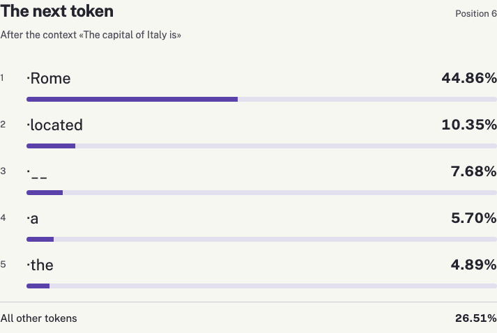
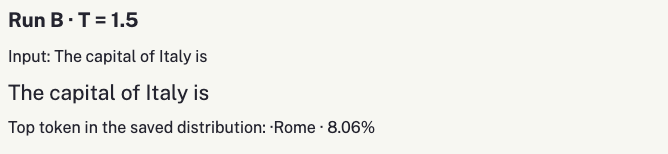

Language Models and Basic Architecture
Use your browser or operating system’s reading tools for text-to-speech. The controls change presentation while preserving every part of the content.
Learning objectives
- Distinguish training a model from using it and from retrieving documents.
- Connect text, tokens, numerical representations, context and output probabilities.
- Explain the function of causal attention in a Transformer decoder.
- Predict and interpret the effects of context and temperature.
- Check an AI-generated solution through explanations, controlled experiments and error correction.
Generative models and language models
Andrea is a second-year computer science student. He can program, but uses words such as “model”, “token” and “attention” without clearly connecting them. His assignment is to build a small text-generation application and explain how it works. He may use AI to help write the code. In the assessment, he will also have to interpret a variation and correct a conceptual error.
A generative AI system produces content conditioned on an input: for example, text from an instruction or an image from a description. “Generative” describes the activity, not a single architecture. This chapter focuses on autoregressive language models based on Transformer decoders. It therefore does not describe every generative system or every component of a commercial assistant.
A language model assigns probabilities to token sequences. In an autoregressive model, it calculates which token might follow the context already available. Repeating this calculation builds a continuation. Training makes it possible to learn complex regularities; the next-token objective alone does not fully explain all the model’s capabilities and limitations.
The model must be distinguished from the application around it. An assistant may include system instructions, web search, file retrieval, filters, external tools and memory managed by the service. When an answer contains references, ask which component retrieved those documents and whether they actually support the claim. Fluent writing does not settle that question.
Data, parameters and training
Parameters are numerical values used in the model’s transformations. Before training, they do not already represent an encyclopaedia organised into readable entries. During pretraining, the system compares its predicted distribution with the tokens actually present in examples, then changes the parameters to reduce an aggregate error. The text supplies the learning signal; optimisation updates the values.
Consider a concrete case. While studying, Andrea writes, “In this chapter, X means Y.” This information may influence the answer through the conversation context. That does not mean the application updates the model’s weights after every message. Any later use of data by a service is a separate matter governed by its settings and terms.
Pretraining may be followed by stages that orient the model towards instructions and desired behaviour. One documented example is training with demonstrations and human preferences, as described for InstructGPT (Ouyang et al., 2022). “Instruct” identifies a model adapted to instructions; it does not guarantee truthful answers, freedom from bias or success in every task. Procedures can differ between model families.
Ordinary inference runs calculations with parameters that are already available. Keeping the model fixed while changing the input studies the effect of context. Training a new version changes the model itself. To compare experiments, Andrea therefore records the model name, input, settings and results.
| Intervention | What changes |
|---|---|
| Training or fine-tuning | The model’s parameters. |
| A new message in the context | Information available to the current inference. |
| Document retrieval | External passages supplied as context. |
Training
- Examples
- Prediction error
- Parameter updates
- Changed model
Inference
- Input + fixed model
- Model calculations
- Output distribution
- Selected output
RAG
- Question
- Retrieved passages
- Context + fixed model
- Generated answer
Three conceptual flows. Training uses examples and prediction error to update parameters, producing a changed model. Inference uses input and fixed model parameters to calculate an output distribution and select output. RAG retrieves passages for a question and supplies them as context to inference. Retrieval is not itself a parameter update.
Tokens and text
A tokenizer converts a string into a sequence of numerical identifiers. A token can correspond to a word, part of a word, punctuation or a sequence including spaces. Special tokens may delimit roles, messages or other structures. Tokens, words and characters are therefore different units.
For example, it is incorrect to assume that “generative” is always one token. Segmentation depends on the tokenizer and the exact string, including capitalisation and spaces. In the lab, inspect the actual output of the chosen model’s tokenizer rather than presenting an invented segmentation as a universal rule.
Identifiers are indices in a vocabulary: the number assigned to a token is not a measurement of its meaning. Nearby IDs do not imply nearby meanings. Tokenisation comes before the learned representations discussed next. The Hugging Face documentation compares several algorithm families and their trade-offs.
Reference: tokenisation algorithms, Hugging Face documentation. huggingface.co/docs/transformers/en/tokenizer_summary
Context length is measured in tokens. Different languages, writing conventions and tokenizers can produce different counts for apparently similar text. Application instructions and previous messages may also occupy part of the window. A file uploaded to a service is not necessarily included as one complete block in every response’s context.
Representations and position
A token’s identifier retrieves an initial numerical representation called an embedding: a vector of learned values. The model’s layers subsequently transform these representations in context. The same token can therefore participate in different calculations in different sentences.
Order matters: “the dog chases the cat” and “the cat chases the dog” use almost the same elements but express different relationships. The model needs information about position. The original Transformer uses positional encodings; later models also use other methods. For example, the Qwen2.5 model card describes RoPE. Do not copy every detail of the 2017 diagram and attribute it to every current LLM.
Reference: Qwen2.5-0.5B-Instruct architecture and configuration. huggingface.co/Qwen/Qwen2.5-0.5B-Instruct
Andrea can think of the initial representation as the starting point of the calculation. The analogy is useful only while it avoids becoming a false explanation: a vector is not a readable definition, and one coordinate does not generally correspond to one isolated human property. Understanding the flow requires identifying the information that enters and the transformations it undergoes.
- Token ID
An index in the tokenizer’s vocabulary.
- Initial embedding
A learned vector retrieved using the ID.
- Contextual representation
Transformed through decoder blocks.
A token ID is a vocabulary index. It is used to retrieve an initial learned embedding vector. Decoder blocks then transform representations using permitted context. This conceptual diagram uses no invented real token IDs or numerical embedding values.
The Transformer decoder
The Transformer introduced by Vaswani and colleagues includes an encoder and a decoder for translation tasks (Vaswani et al., 2017). Our diagram instead concerns a decoder-style language model. Here, the context is a token sequence and the objective is an autoregressive continuation. The diagram illustrates the main functions, without reproducing every variation and optimisation of a specific implementation.
- Text and tokens
- Representations + position
- Decoder blocks
- Logits and probabilities
- Selected token
Text becomes tokens. Numerical representations include position information. Decoder blocks transform the context. The output produces scores, then probabilities over the vocabulary. A selected token is added to the context, allowing the process to repeat.
A decoder block includes causal attention and feed-forward transformations, together with residual connections and normalisation. Attention relates representations at permitted positions. The feed-forward network applies additional transformations to representations. Residual connections combine a transformation’s result with the flow that preceded it. Repeated blocks allow successive processing.
“Causal” describes a constraint: when predicting the next token, a position can use earlier tokens and its own available information, but cannot use future tokens in the sequence being generated. During training, many positions can be processed together with an appropriate mask. During generation, each selected token is appended and enables the next step.
| q / k | 1 | 2 | 3 | 4 | 5 |
|---|---|---|---|---|---|
| 1 | yes | no | no | no | no |
| 2 | yes | yes | no | no | no |
| 3 | yes | yes | yes | no | no |
| 4 | yes | yes | yes | yes | no |
| 5 | yes | yes | yes | yes | yes |
At position one, only position one is permitted. At position two, positions one and two are permitted. The pattern continues until position five can access positions one through five. No row can access a later position.
Query, key and value
Attention constructs query, key and value vectors through learned transformations. Queries are compared with keys. The scores, after masking and normalisation, weight the values. The result combines information from permitted positions. “Attention” is the technical name of this operation; it does not establish consciousness or human attention.
Multiple attention heads allow combinations in different subspaces. Assigning every head a permanent label such as “grammar” or “truth” is unjustified. A visualisation showing high weights on a token is also insufficient to establish a complete causal explanation of behaviour. The lab displays output probabilities; the diagram explains the general path without claiming to read the model’s thoughts.
Probabilities and temperature
At the end of the calculation, the model produces a score, or logit, for every vocabulary entry. A softmax converts these scores into non-negative values that sum to one. The distribution depends on context and parameters. It predicts the next token; it does not measure the truth of the whole answer.
p_i = exp(z_i / T) / sum_j exp(z_j / T)
In the formula, z denotes the logits and T a positive temperature. Holding logits fixed, a lower temperature concentrates the distribution on more probable alternatives; a higher temperature makes it more uniform. Their order remains unchanged under the ideal transformation. This adds no knowledge and does not retrain the model. The eventual choice also depends on the decoding procedure.
Always choosing the highest-probability token is greedy selection. Sampling from the distribution allows two runs to diverge. A higher temperature does not force an individual output to be more original; it changes the distribution used for selection. Filters such as top-k and top-p can further restrict alternatives. To isolate temperature’s effect, our experiment does not vary those controls at the same time.
The demo displays five alternatives and “rest of the vocabulary”. The first five probabilities do not generally sum to one. Renormalising only those five without saying so would suggest that they are the only possibilities. Calculate the distribution over the full vocabulary first, then select the alternatives to display.

A worked three-token example
For this calculation only, imagine a vocabulary of three tokens, A, B and C, with fixed logits 2, 1 and 0. These are illustrative scores, not measurements from Qwen. At T = 1 the denominator is exp(2) + exp(1) + exp(0), approximately 11.1073. Token A therefore receives approximately 7.3891 / 11.1073 = 0.6652, or 66.52%.
| T | Token A | Token B | Token C |
|---|---|---|---|
| 0.5 | 86.68% | 11.73% | 1.59% |
| 1 | 66.52% | 24.47% | 9.00% |
| 2 | 50.65% | 30.72% | 18.63% |
Only temperature changes between rows. A remains the most probable token, while its share decreases as temperature rises. The values are rounded to two decimal places, so a displayed row may differ from 100% by 0.01 percentage points. In the real-model app, calculate over the complete vocabulary; do not substitute this three-token example.
A: logit 2 · B: logit 1 · C: logit 0. Segment order: A, B, C.
Three probability bars, with segments ordered A, B and C. At temperature 0.5 their shares are 86.68, 11.73 and 1.59 percent. At temperature one they are 66.52, 24.47 and 9.00 percent. At temperature two they are 50.65, 30.72 and 18.63 percent. These values are illustrative, not Qwen model measurements.

Explain with Notebook, check with Desmos
Upload this chapter to Notebook and ask: “Use only section 1.6. Explain p, z, i, j and T in the softmax formula. Work through the three-token example at T = 1, showing the full denominator. Then ask me to predict the effect of T = 0.5 before revealing it. Distinguish the illustrative calculation from measurements of the real model.” Check the explanation against the formula and the table.
Use the free Desmos Graphing Calculator to inspect the same relationship. It can be used without signing in; an account is needed to save graphs. Here the horizontal variable x represents positive temperature. First define the shared denominator, then the three probability functions below.
Reference: Desmos Graphing Calculator User Guide, expressions, graph settings and account requirements. help.desmos.com/hc/en-us/articles/202529279-Desmos-Graphing-Calculator-User-Guide
d(x) = exp(2/x) + exp(1/x) + 1
f(x) = exp(2/x) / d(x)
g(x) = exp(1/x) / d(x)
h(x) = 1 / d(x)
Append the domain restriction {x > 0} to each plotted probability function. Hide the denominator’s graph and set the horizontal window to 0.1–3 and the vertical window to 0–1. Compare values at x = 0.5, 1 and 2 with the table. Check f(x) + g(x) + h(x): it should equal one. The calculator checks the expressions you entered; it does not establish that an AI explanation or a program implements the intended formula.
Generation, context and retrieval
Generation appends one token to the sequence and repeats inference until a stopping condition is reached. A continuation of twenty-four tokens is not necessarily twenty-four words or a complete sentence. A mid-sentence interruption may be a consequence of the chosen limit rather than a tokenizer error.
Compare “The capital of France is” with “In my story, the imaginary capital of France is called”. The second context changes the task: completing a fictional situation. A different answer does not by itself prove that the model has forgotten geography. Read the instructions, context and result together before judging.
In retrieval-augmented generation, or RAG, a component searches documents and makes selected passages available to generation (Lewis et al., 2020). Model parameters and the consulted collection are distinct components. A recent document can update the information available in context without changing weights. Retrieval can fail, select an irrelevant passage or supply material the response misinterprets.
For studying, this means checking the reference: open the cited passage, read what it supports and compare it with the generated claim. A link is not automatic proof. If the text does not contain the answer, the student should recognise that limit and seek another appropriate source, preserving the distinction between chapter material and additional information.
Reliability and limitations
A model may produce plausible but incorrect text: an inaccurate explanation, a nonexistent reference or a detail unsupported by the material. These errors are often called hallucinations. They do not all have one cause and do not disappear when temperature is lowered. More deterministic selection can reproduce the same mistake consistently.
Checks should match the question. For a formula, verify definitions and conditions; for a citation, retrieve the publication; for a program function, run a test that could disprove the expected behaviour. Asking “Are you sure?” may elicit another persuasive answer, but does not replace external evidence.
The small lab model is chosen to make a real browser execution observable. It is not a benchmark for every LLM’s performance. Quantisation, numerical precision, device and decoding procedure can influence outcomes. Reading the model card and recording settings makes comparison more informative.
The exercise’s educational purpose is to connect observations with explanations. Andrea separates what he measured, what he infers and what still needs checking. One run supplies a case to interpret; a comparison under controlled conditions supports a more precise conclusion.
Lab with a real model
Build an English-language page using Transformers.js and onnx-community/Qwen2.5-0.5B-Instruct in its q4 quantised variant. The official documentation demonstrates this combination on WebGPU. Prepare a compatible browser and device and download the model before presenting. Resource requirements depend on the environment. A failed load should produce a useful message, not fabricated values.
Reference: official Transformers.js guide, Qwen2.5-0.5B-Instruct q4 example. huggingface.co/docs/transformers.js/v3.8.1/en/guides/dtypes
Assignment requirements
- An input field and a display of the actual input token IDs.
- Five next-token alternatives, probabilities over the full vocabulary and the remaining probability mass.
- A temperature control, one-token generation and a short continuation limited to twenty-four new tokens.
- Reset, stop and comparison of two runs with input and settings recorded.
- Loading state, readable errors and identification of the model used.
You may ask AI to produce the complete program. Save the prompt, first solution and revisions, without attributing code to a service that did not produce it. Before accepting the result, check tokenisation, logit shape, the complete distribution, sampling, decoding and interface. Apparent success is insufficient: an application can display neat but incorrect numbers.
Comparison protocol
- Write a prediction before selecting Generate. State which variable you will change and what you will observe.
- Run experiment A. Save model, input, temperature, alternatives, remaining mass and selected token.
- Change one condition. Run experiment B and compare distributions, distinguishing them from sampled outputs.
- Connect the difference to a chapter section. If the result does not match your prediction, propose a testable explanation.
- Close the code and explain the path from text to the next token in your own words. Finally, try a new input.
Experiment 1: keep context fixed and change temperature. Experiment 2: keep temperature fixed and change context. Experiment 3: append a selected token and observe the next step. Changing both variables at once prevents attributing a difference to just one. When sampling, consider variation between runs and, where available, the random seed.
Studying an AI-generated solution
A complete solution can shorten the time needed to obtain an artefact. To turn it into an opportunity to study, Andrea separates the program into functions: acquire text, tokenize, run the model, calculate probabilities, select a token and update the interface. He connects each function to a chapter passage and an observation he can check.
He can ask an assistant grounded in the material for a graduated explanation: first one sentence, then the relationship between components, and finally the code detail he does not understand. Source, explanation and analogy should remain distinguishable. A program is not understood simply because its explanation sounds familiar.
To check himself, he puts the explanation aside and reconstructs the flow in his own words. He then checks the reconstruction and revises the map. The exercise combines consultation, prediction, execution and independent recall. An error becomes useful when it is located and explained, rather than silently replaced with another answer.
Evidence for assessment
- A map with named relationships, rather than a list of terms alone.
- A justified prediction and a controlled comparison.
- A short independent explanation of a step selected by the teacher.
- An error correction that states the reason and the check performed.
Choose text, speech or diagrams to fit the objective. Support access with reading preferences, glossaries and segmentation. Assess conceptual relationships rather than reading speed or typing accuracy.
Glossary
- Generative AI
- Systems that produce content conditioned on an input.
- LLM
- A large language model; the abbreviation does not identify a complete application.
- Token
- A vocabulary unit used to represent and process text.
- Tokenizer
- A procedure that converts a string into token IDs and supports decoding.
- Parameter
- A learned numerical value used in the model’s transformations.
- Context
- The sequence of information made available to the current inference.
- Embedding
- An initial numerical representation associated with a token.
- Causal attention
- Combining representations while respecting the constraint on future tokens.
- Logit
- A score before conversion to probability.
- Softmax
- Normalisation of scores into a probability distribution.
- Temperature
- A positive parameter that changes the concentration of a distribution.
- Sampling
- Selecting an outcome according to a probability distribution.
- Inference
- Running a model with the parameters currently available.
- Fine-tuning
- Further training that updates parameters.
- RAG
- Generation accompanied by retrieval of passages from an external collection.
- Quantisation
- Reduced-precision numerical representation that primarily reduces memory use; speed and quality depend on the implementation.
Assessment and expected answers
Before reading the expected answers, try to respond independently. The teacher may change the example while retaining the same relationship to explain.
Does uploading the chapter automatically update model weights?
No. Making material available to context or retrieval does not itself update parameters. Distinguish the service’s function from training.
Why does a causal decoder not see future tokens?
The mask prevents using those positions in prediction. Subsequent generation instead adds already selected tokens to the available context.
What changes when temperature increases at fixed logits?
The distribution becomes less concentrated; the ideal transformation preserves the logits’ order. It adds no knowledge and does not guarantee an individual sample’s quality.
The five displayed alternatives sum to 70%. Is that an error?
Not necessarily: the remaining 30% may belong to other tokens. Check that probabilities are calculated over the full vocabulary and that the remaining mass is displayed.
Does a correct continuation establish the student’s understanding?
Further evidence is required: independent explanation, a justified prediction, interpretation of a variation or recognition of an error.
References
- Lewis, P., Perez, E., Piktus, A., Petroni, F., Karpukhin, V., Goyal, N., Küttler, H., Lewis, M., Yih, W.-t., Rocktäschel, T., Riedel, S., & Kiela, D. (2020). Retrieval-augmented generation for knowledge-intensive NLP tasks. Advances in Neural Information Processing Systems, 33, 9459–9474. https://arxiv.org/abs/2005.11401
- Ouyang, L., Wu, J., Jiang, X., Almeida, D., Wainwright, C. L., Mishkin, P., Zhang, C., Agarwal, S., Slama, K., Ray, A., Schulman, J., Hilton, J., Kelton, F., Miller, L., Simens, M., Askell, A., Welinder, P., Christiano, P., Leike, J., & Lowe, R. (2022). Training language models to follow instructions with human feedback. Advances in Neural Information Processing Systems, 35, 27730–27744. https://arxiv.org/abs/2203.02155
- Vaswani, A., Shazeer, N., Parmar, N., Uszkoreit, J., Jones, L., Gomez, A. N., Kaiser, Ł., & Polosukhin, I. (2017). Attention is all you need. Advances in Neural Information Processing Systems, 30, 5998–6008. https://arxiv.org/abs/1706.03762
Further resources
The technical documentation is linked in the relevant chapter notes. Pages checked on 1 November 2026. For an additional interactive visualisation, explore Transformer Explainer.
Edition and use
Original teaching text by Marco Cremaschi, prepared with AI assistance. The book and scenario are fictional; no real ISBN or publisher is implied. Conceptual examples are illustrative; lab measurements come from model executions. Sora and DM Sans are distributed under the SIL Open Font License, included in the source files.
This version contains the same material as the PDF, with reflow, left-aligned text and controls for size, spacing and theme.